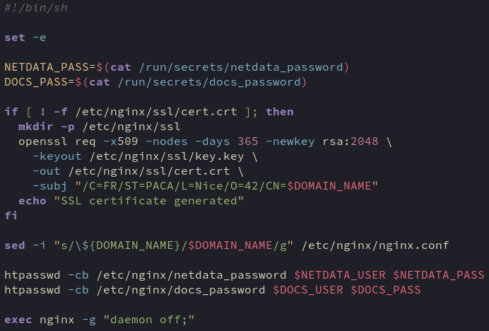

Exit on error
If any command fails, the script will exit and nginx will not run with incomplete setup
If the ssl cert hasn’t already been generated, run the command
-f = exists as regular file
Create ssl directory in nginx config directory
Openssl certificate request tool
Create a self-signed certificate
Don’t encrypt private key (no passphrase needed)
Valid for 1 year
Generate rsa private key with 2048 bits
Where to save private key and public certificate
Certificate subject (identity info)
${DOMAIN_NAME} inherited from .env via docker-compose.yaml
Replace all instances of ${DOMAIN_NAME} in nginx.conf with env var DOMAIN_NAME inherited from docker-compose.yml
Create password for netdata (bonus). Username and password created by makefile and passed via env variable / docker secrets respectively
Run nginx without daemon
-g = global config directive
If run as a daemon it would detach from terminal but docker needs a foreground process